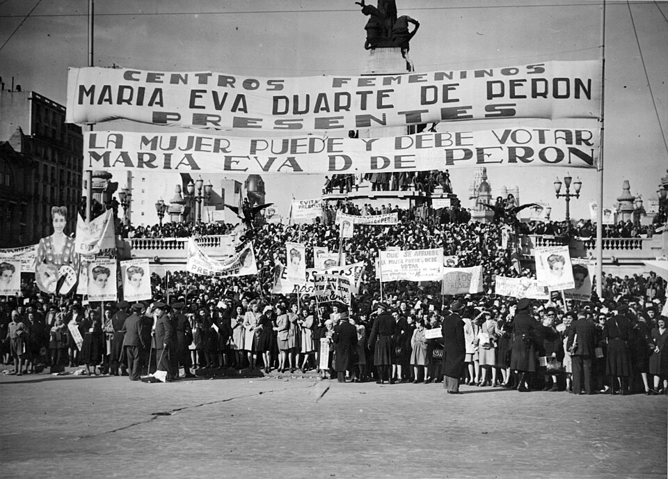

Las mujeres ya votan: se promulgó la ley de sufragio femenino ante una plaza desbordada
Desde el balcón de la Casa Rosada, Eva Perón anunció a una multitud de mujeres la promulgación de la ley 13.010, que otorga a la argentina los mismos derechos políticos que al varón. Medio país entra al padrón de una sola vez.

La Plaza de Mayo, que ha visto jurar constituciones y caer gobiernos, vivió esta tarde una escena sin precedente: decenas de miles de mujeres —obreras, maestras, amas de casa, empleadas— la colmaron para recibir, de manos del presidente Perón y de la voz de su esposa, el decreto que promulga la ley de sufragio femenino sancionada por el Congreso el día 9. «Recibo en este instante, de manos del Gobierno de la Nación, la ley que consagra nuestros derechos cívicos», proclamó Eva Perón desde el balcón, y guardó el texto entre las manos como se guarda una escritura largamente pleiteada.
El pleito, en efecto, viene de lejos, y sería injusto que la crónica lo olvide: lo abrieron hace décadas las socialistas y las librepensadoras, Alicia Moreau y sus compañeras, y aquella doctora Julieta Lanteri que a fuerza de vericuetos legales logró votar ella sola en 1911, para escándalo de los caballeros. Diecisiete proyectos durmieron en el Congreso desde 1919. Hizo falta esta hora del país, y esta mujer de treinta y cuatro años que habla a las plazas como nadie, para que la puerta cediera del todo.
El trámite tuvo dos velocidades: el Senado aprobó el proyecto hace más de un año casi sin debate, y en Diputados durmió meses, mientras desde su despacho y desde las radios Eva Perón lo empujaba con una campaña como no se había visto: giras, discursos, delegaciones de mujeres llenando las galerías del Congreso en cada sesión. Los argumentos en contra fueron los de siempre —que el hogar, que la política ensucia, que más adelante— y sonaron más viejos que nunca en un mundo donde las francesas votan desde el 44 y las italianas desde el 45. El 9 de este mes, con las barras desbordadas de mujeres que no se movieron hasta el final, llegó la sanción entre lágrimas y vivas. Faltaba la firma, y la firma quiso plaza.
La escena del balcón tuvo una teatralidad que ningún cronista precisará adornar: Perón firmó y entregó el decreto a su esposa, y ella lo levantó ante la multitud como se levanta una escritura largamente pleiteada, con la voz quebrada al leer sus primeros párrafos. Abajo había pañuelos al aire, obreras con el uniforme de la fábrica, madres con hijas de la mano traídas a propósito «para que veas esto». Ahora empieza la parte de escribano: confeccionar el padrón femenino, emitir millones de libretas cívicas, explicar el cuarto oscuro a quien nunca la dejaron entrar. Y una pregunta que ya asoma en las sobremesas: si votan, ¿serán también votadas? La ley no lo impide, y la señora del balcón, a juzgar por esta tarde, tampoco.
Desde hoy, la Argentina duplica su ciudadanía: en las próximas elecciones nacionales votarán por primera vez millones de mujeres, y ya se anuncia el empadronamiento y la libreta cívica. Los partidos hacen cuentas con inquietud, porque nadie sabe cómo vota la mitad del país que nunca votó. Las mujeres, por su parte, hicieron esta tarde algo más elocuente que cualquier pronóstico: se quedaron en la plaza cantando hasta la noche, dueñas por fin de la ciudadanía y, a juzgar por el entusiasmo, con toda la intención de usarla.